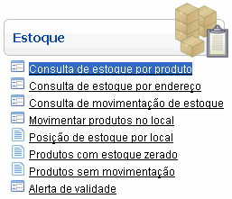
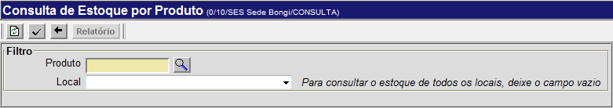
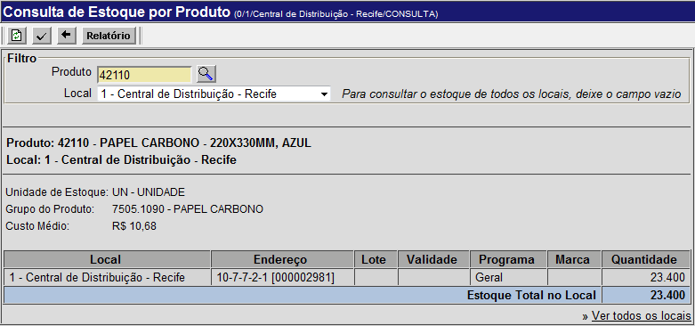

Consulta de Estoque por Produto [ Voltar ]Para
consultar a quantidade
existente em estoque de um determinado produto, clique em "Consulta de
estoque por produto" dentro do menu "Estoque". 
O sistema vai abrir a seguinte tela: 
Para gerar uma lista de estoque para um determinado produto, siga os passos abaixo: 1º
Passo: informe o código do produto para esta consulta.
Caso não saiba o código do produto, clique no botão Observação: se o campo "Local" for deixado em branco, todos os locais de estoque que contiverem o produto selecionado serão exibidos. 3º
Passo: clique no botão 
4º Passo: se você desejar
imprimir o relatório, clique no botão |